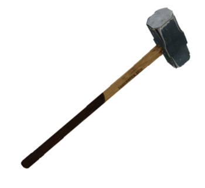
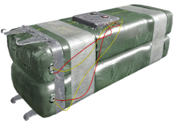
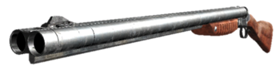
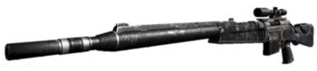
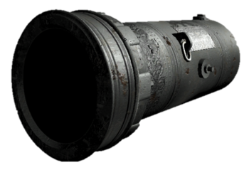
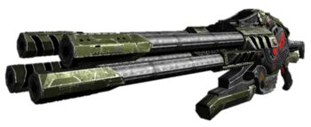

| Imagen | Nombre | Descripcion |
|---|---|---|
|  | Martillo | No es muy efectivo contra enemigos grandes o más duros, como Adultos Arachnoids, Major Bio-Mecanoids o Scrapjacks, especialmente considerando el hecho de que Scrapjacks tiene un poderoso ataque cuerpo a cuerpo que hace mucho daño. Reserva usando el mazo sobre estos enemigos más fuertes solo para acabar con ellos después de debilitarlos. |
|  | Carga de demolición C-4 | Esto se puede ignorar al enfrentarse a enemigos más débiles como Kleer Skeletons o Beheaded Rocketeers, ya que el poder explosivo es suficiente para diezmar a los enemigos más débiles en masa. |
|  | Escopeta doble | La doble escopeta es un excelente arma anti-Kleer. Un disparo a quemarropa siempre matará a un Kleer de un solo golpe. Los tiros de corto alcance también tienen la posibilidad de matar a este último. |
|
Escopeta doble | Si bien el arma puede causar un daño rápido a los aracnoides adultos, no se recomienda para eliminarlos, ya que se necesitan aproximadamente dos clips de cargador completos para matar uno, lo que puede desperdiciar municiones. |
|  | Francotirador Raptor | El RAPTOR es una de las armas de largo alcance más poderosas del mundo. Representa lo mejor y lo último en armas de fuego de larga distancia y alta precisión. |
|  | Cañon SBC | Persisten los rumores de que las balas de cañón llenas de uranio pueden ser peligrosas para el operador, pero el profesor Kiesel afirma que el efecto en la esperanza de vida promedio de un soldado de las Fuerzas de Defensa de la Tierra debería ser insignificante.(Si tenemos en cuenta que praticamente combatir en estas circunstacias es posiblemente una muerte asegurada, si, si es insignificante el daño que te pueda hacer.-dylan) |
|  | Pistola láser XL2 | Arma futurística que emite pulsos de energía ralentizados por sus cuatro cañones, lo que dota a este arma de gran cadencia de disparo y causa un gran daño al enemigo. No tiene problemas de recalentamiento y usa células de energía X7 como munición. |